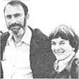

Paul Ehrlich (Bing Professor of Population Studies and Professor of Biological Sciences, Stanford University) and Anne Ehrlich (Senior Research Associate, Department of Biological Sciences, Stanford) are familiar names to ecologists and environmentalists everywhere. But while most folks are aware of the Ehrlichs' popular writing in the areas of ecology and overpopulation (most of us - for instance - have read Paul's book The Population Bomb ) . . few people have any idea of how deeply the Ehrlichs are involved in ecological research (the type that tends to be published only in technical journals and college texts). That's why we're pleased to present this regular semitechnical column by these well-known authors/ecologists/educators.
As we've pointed out in our last few columns, most of this planet's animals, plants, and micro-organisms can be effectively saved from extinction only if they're allowed to reproduce in their natural settings. Therefore, the ability to conserve populations and species boils down - for all intents and purposes - to the ability to conserve habitat.
Now the broad outlines concerning just how this should be accomplished are simple in principle. First of all, no more virgin land should be developed anywhere. There are already plenty of disturbed areas available to fill the needs of people . . . if human population growth is brought under control in as rapid and humane a manner as possible.
It's true, of course, that there is currently a shortage of decent housing in the United States, but that problem could be remedied by the high-density redevelopment of such places as the South Bronx, Spanish Harlem, and East Los Angeles. In a similar vein, the additional food required by poor countries could likely be obtained through the use of an ecologically sound intensification of agriculture, rather than by bringing more marginal land under cultivation (and most of the acreage that is now uncultivated is agriculturally marginal).
As a first step, the few remaining undisturbed lands of Earth should be transformed into reserves, with human access to them strictly controlled. Furthermore, such areas would have to be protected not only from activities like building, mining, logging, and off-road vehicle travel but also from the more subtle threats of air pollution, acid rain, and pesticide drift. (The atmosphere, you see, doesn't respect human-made territorial boundaries.)
NOT GOOD ENOUGH
Unfortunately, the creation of such a reserve system wouldn't, by itself, be enough to guarantee the preservation of Earth's biological riches . . . because much of the diversity originally contained in reserves will be lost, once such areas become "islands". In order to understand why that would happen, we'll have to make a short excursion into an area called "island biogeography". Some 15 years ago, two leading ecologists - the late Robert H. MacArthur and Edward O. Wilson (of "sociobiology" fame) - postulated that the number of species on an island normally remains more or less constant, and is determined primarily by two factors: successful colonization by new species and extinction of old ones.
The two scientists concluded that - everything else being equal - the larger the number of species, the higher would be the rate of extinction . . . since the island would then be more crowded and the population size of each species, on the average, would be smaller. On the other hand, the fewer the residents, the easier it would be for "colonist" species to find space to settle in.
Additionally, the rate of extinction would be influenced by such factors as island size . . . that is, the smaller the island, the higher the extinction rate would probably be. The arrival rate of potential colonists also would vary with the size of the island, since random wanderers would be more likely to "hit" a large target than a small one. And, of course, distance from the nearest mainland would also be important in determining the flow of immigrants.
This "equilibrium theory" makes sense . . . and it's supported by some actual data. For instance, the 1883 explosion of the volcano Krakatoa created a wasteland that was slowly recolonized. The number of bird species there gradually increased from zero to 27 . . . where it has stayed, even though five of the first 27 species went extinct (that is, the island's population died out) and were replaced by five other varieties.
"ISLAND" SURVIVAL
Any area of the planet's surface can be thought of as being similar to an island . . . with the composition of its flora and fauna determined by rates of colonization and extinction of species. With that in mind, then, picture what happens when a nature reserve is established and becomes isolated from other similar areas by extensive intervening terrain made up of, say, farmland.
Immediately, the extinction rate in the reserve will start to rise, as the area will almost certainly be too small to support as many populations as were once supported by the larger habitat area that formerly surrounded it. Individuals of species that were at first present - because they were part of a larger population that occupied an area bigger than the preserve - will start to disappear.
At the same time, the inflow of potential colonist varieties will dwindle, because the surrounding farmland presents a barrier to the movement of individuals. Since the extinction rate will be up, and the colonization rate down, the number of species at equilibrium will be reduced. This means that the flora and fauna will become less diverse.
Ten thousand years ago - when the great glaciers of the last ice age melted and the sea levels rose - just such a relaxation, or reduction in diversity, occurred among the mammal fauna found in certain Asian areas that became islands. In fact, none of these "new" islands - even the very large ones - were able to retain the entire spectrum of fauna found on the Asian mainland. Judging by what happened there, then, it's quite possible to predict what would happen if all present African game parks should become completely isolated "islands". About half of the large mammal species would be lost from the average reserve in some 500 years, and there would be less predictable - but doubtless substantial - losses among other groups of animals and plants, as well.
It's plain, then, that the maintenance of only one or a few small reserves in each land region would be a hopelessly inadequate measure to protect the present diversity of life for any length of time. Even under the most careful protection, small, deeply isolated reserves would gradually suffer enormous losses of species. And large ones, even if they included connecting corridors to other reserves, could be expected to have significant losses.
THOUGHTFUL DEVELOPMENT
Since our goal should be to preserve as much as possible of the planet's biological diversity more or less permanently, it would obviously be unwise to place all our eggs in the admittedly fragile reserve basket. Developed and disturbed areas must also be made more hospitable to organisms other than humankind . . . in order to permit more and larger populations to be maintained and to provide corridors for migrants to travel when passing between the fully protected reserve areas.
There are many ways that this could be accomplished. Diversity could be introduced to tree farms, for instance. Contrary to present practice, several species should be planted together, and shrubs and herbs might be encouraged to grow beneath the trees. In addition, the use of hedgerows or windbreaks between farm fields should become standard practice, as should the setting aside of woodlots in agricultural areas.
Under such a redevelopment program, city parks, vacant lots, and the "roughs" of golf courses would be planted with native species, while exotic weeds would be suppressed wherever possible. Lawns would be replaced with natural landscaping. The herbiciding of roadsides and powerline right-of-ways would have to stop, too, as would the lining of streams with concrete.
Wherever possible, efforts would be made to restore disturbed areas to nearly natural habitats. The ecosystem that once occupied an overgrazed mountain range, strip mine, parking lot, or building site can never be precisely replaced, but - with effort - useful ecosystems could be established in such places . . . ecosystems that would contain a wide variety of native organisms.
Most important, though, any program to conserve biological diversity must include a reduction in the burning of fossil fuels (which is the root cause of acid rain) and the institution of the strictest emission controls when such fuels are used. Limitations in the use of pesticides and synthetic fertilizers must also be incorporated in the plan . . . as well as provisions for spreading the practice of soil conservation and for bringing an end to overgrazing.
CONSERVATION'S "IRON LAWS"
All of these measures may be thought of as the necessary tactics of conservation. However, their implementation will require a strategy as well . . . one that, we believe, should be based on five "Iron Laws of Conservation".
[1] In conservation, there is only successful defense or retreat . . . never a true advance. A species or an ecosystem, once destroyed, cannot be restored.
[2] Conservation and continued growth of human population are fundamentally incompatible.
[3] Conservation and a growthmanic economic system are also fundamentally incompatible.
[4] The notion that only the short-term goals and immediate happiness of Homo sapiens should be considered in making moral decisions about the use of Earth is lethal . . . not only to nonhuman organisms but to humanity as well.
[5] Arguments that support the right of nonhuman life-forms to exist or that focus on their aesthetic value and intrinsic interest - as well as appeals to compassion for what may be our only living companions in the universe - now mostly fall on deaf ears. Until our species' ethical and aesthetic attitudes evolve further, conservation must be promoted as an issue of human well-being and, in the long run, human survival.
Thus, preserving the diversity of life will entail a changed relationship not only between human beings and their environment, but also among people. Our population growth must be halted as soon as possible and a gradual decline begun. The economic system must be reorganized . . . so that it's oriented toward sustaining society rather than toward maintaining perpetual growth. The gap between rich and poor must be narrowed . . . not simply because it's the moral thing to do, but because it's essential that it be done if we're to avoid nuclear war and preserve diversity. (Remember, the poor countries "own" that most precious resource, our planet's species-rich tropical forests.)
Most of all, time must be gained to complete the revolution in ethics that will assure the right of all other organisms to exist . . . and to insure that such a right is not casually violated. For the last century, humanity has been moving in the right direction . . . as demonstrated, for example, by the increasing public concern for whales and the institution of laws to protect animals against cruelty. But we have a long way to go before such basic rights are extended to all living things.
We believe that such an ethical revolution holds the only real promise of conserving Earth's living diversity in the long run. All people must become aware of the needs and rights of other beings . . . and aware that humanity is both morally and physically dependent on those creatures.
The tactics and strategy outlined here may seem extremely impractical in a society caught up in the silliness of "supply-side economics". Yet such a program is crucial to the persistence of all of this planet's economic systems, dependent as they are on the continuance of ecosystem services. We hope that what seems impractical today will be recognized as imperative a decade from now.
Any less comprehensive change - or any great delay - is likely to mean that the job won't get done. And then our own species will pay the price along with the others.
More information on the preservation of diversity can be found in Extinction: The Causes and Consequences of the Disappearance of Species by Paul and Anne Ehrlich (Random House, 1981, $15.95). Their work in ecoscience is supported in part by a grant from the Koret Foundation of San Francisco, California. From January 23 to February 6, 1983 Anne and Paul Ehrlich, and their friends and colleagues John and Cheryl Holdren, will join MOTHER for an educational South Pacific Seminar on the islands of Tahiti, Bora Bora, Rangiroa, and Huahine. For information on this and other tours, turn to page 74.
|
 |
|
|